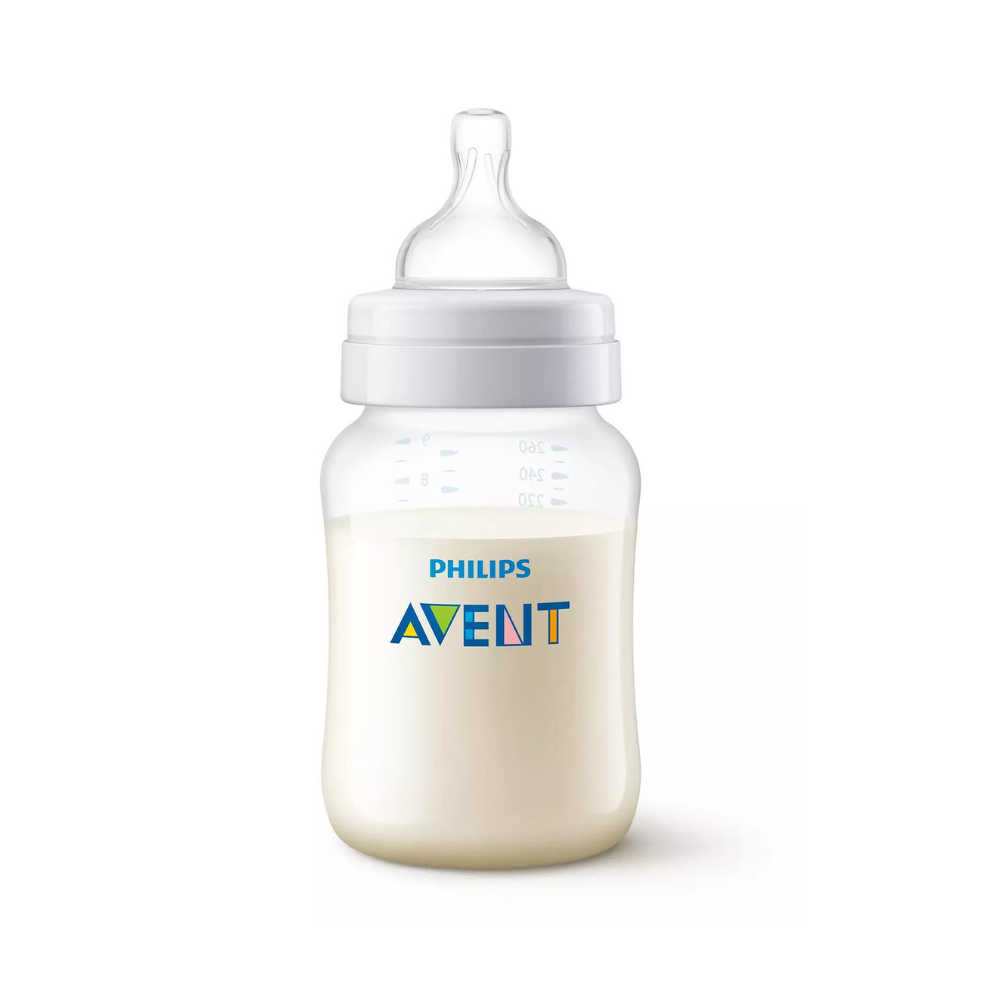
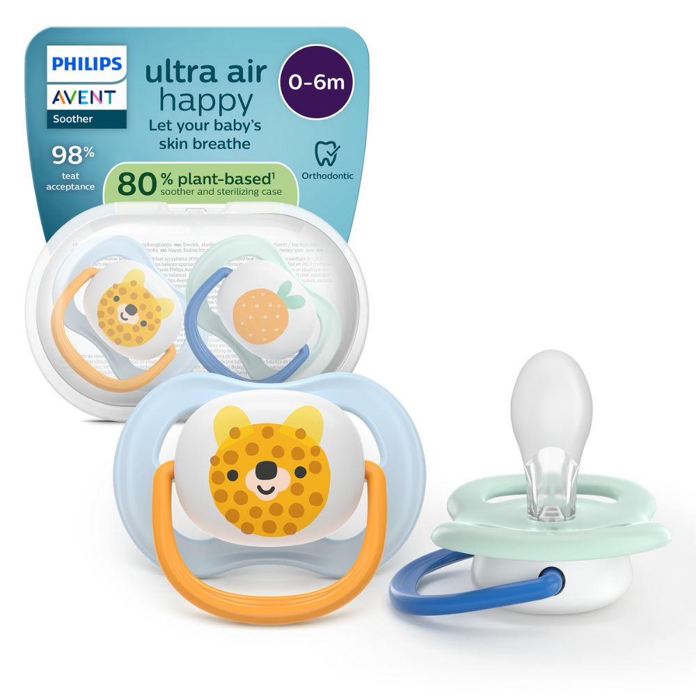

Primul Crăciun.
Bucurii mici și mari.
Descoperă selecția de sărbători pentru cei mici, de la îngrijire delicată la accesorii pentru momentele petrecute împreună.
bucurii mari.


Selecția de CrăciunOferte de Crăciun
Patru idei pentru cei mici, cu reduceri demonstrative de 20%.
Explorează categoriile
Produse organizate simplu, pentru ca părinții să găsească rapid ceea ce le trebuie.
Produse pentru întreaga familie
O selecție demonstrativă de articole pentru rutina de zi cu zi a familiei.
Un loc gândit cu grijă pentru familii.
Aromina Farma este conceptul unui magazin online specializat în produse pentru bebeluși și părinți. Site-ul aduce împreună categorii utile, produse reale și un coș de cumpărături demonstrativ.
Acest website este realizat în scop educațional și prezintă cum ar putea funcționa un magazin online modern.
Citește despre noiLucruri bine de știut.
Informații clare despre modul în care funcționează această demonstrație.
Pot comanda produsele de pe site?+
Nu. Site-ul este un proiect școlar, iar funcțiile de adăugare în coș sunt demonstrative. Nu se procesează comenzi sau plăți.
Sunt produsele și prețurile reale?+
Produsele și fotografiile sunt reale. Prețurile și reducerile sunt fictive, create pentru prezentarea proiectului școlar.
Ce tipuri de produse găsesc aici?+
Lapte praf, scutece, accesorii pentru bebeluși, îngrijire personală, machiaj, produse pentru păr și medicamente.
Pot folosi site-ul și pe telefon?+
Da. Aspectul și navigarea sunt adaptate atât pentru telefoane, cât și pentru tablete și calculatoare.